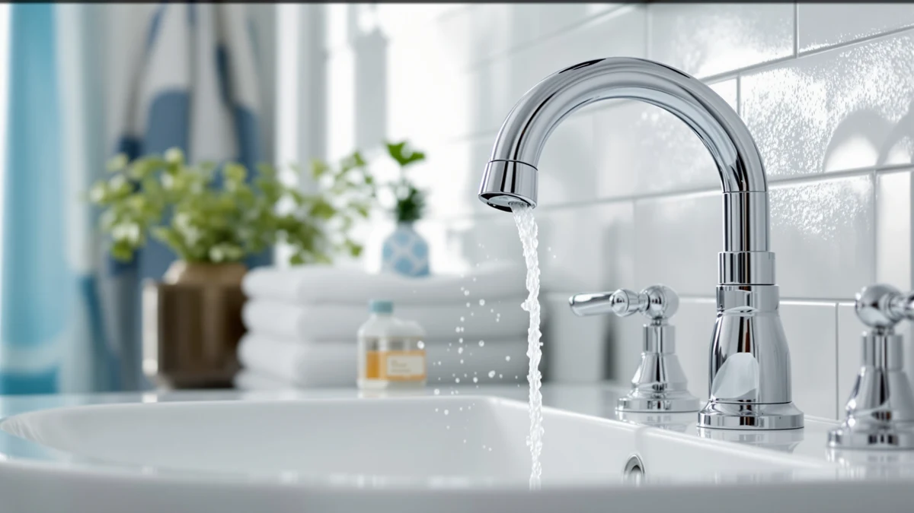

Wowow Bathroom Faucet Review (2026): Worth It?
Prices and picks verified as of November 2026. Independent, reader-supported reviews.


Quick Answer
This Wowow bathroom faucet review compares the $103.99 WOWOW Gold Bathroom Faucet 3 against three alternatives, a Delta, a Filterbaby, and a Moen faucet, based on published pricing, materials, and features rather than a physical comparison. The WOWOW earns the top spot here for buyers who want a brass body and a gold finish at a price close to its nickel and chrome competitors.
Our pick: WOWOW Gold Bathroom Faucet 3, $103.99 Check Price on Amazon
Bottom line: our top pick is the WOWOW Gold Bathroom Faucet 3 Hole at $103.99.
Things to Know Before You Buy
- Price keeps these four faucets close together. This Wowow bathroom faucet review found only a $9.00 spread between the cheapest option, the Moen Halle at $99.00, and the most expensive, the Filterbaby Skincare Filter 2.0 at $108.00.
- The WOWOW is the only gold-finish option in this comparison. Delta's Arvo comes in brushed nickel and Moen's Halle comes in chrome, so finish, as much as price, separates the WOWOW Gold Bathroom Faucet 3 from the other two standard faucets.
- The Filterbaby is not a direct match for the other three. Its Skincare Filter 2.0 design centers on water filtration rather than the finish and handle style that define the WOWOW, Delta, and Moen faucets covered here.
- None of the four listings publishes a star rating yet. As with many newer faucet listings, none of the four products in this comparison shows a review count, so the comparison relies on specs and pricing rather than an established track record.
- Material details are limited to what each listing confirms. The WOWOW Gold Bathroom Faucet 3 lists a brass body under its gold finish, and the other three listings don't break down their base material beyond the finish name.
This Wowow bathroom faucet review compares the $103.99 WOWOW Gold Bathroom Faucet 3 against three other faucets that turned up in the same search: the Delta Arvo Brushed Nickel Bathroom faucet, the Filterbaby Skincare Filter 2.0 Bathroom, and the Moen Halle Chrome One-Handle Single. All four sit within $9.00 of each other, so the decision comes down to finish, brand, and what each listing actually confirms rather than a wide price gap.
The WOWOW Gold Bathroom Faucet 3 earns the top spot in this comparison because it's the only faucet here with a gold finish, and it costs less than the Filterbaby while sitting only a few cents above the Delta Arvo. At $103.99, it lands almost exactly in the middle of the four prices, which makes the finish, not the cost, the real reason to pick it over the brushed nickel or chrome alternatives.
Why You Should Trust Us
Ilane Tall researches and writes product comparisons for Best Bathroom Faucets, focusing on specs, pricing, and verified owner feedback across major faucet brands. For this Wowow bathroom faucet review, she compared the WOWOW Gold Bathroom Faucet 3's listed material and finish against the Delta Arvo, the Filterbaby Skincare Filter 2.0, and the Moen Halle, then checked current Amazon pricing for all four at the time of writing. Every link in this review points to the real listing, and every price reflects what shoppers saw at the time of publication, not a promotional rate that could change by checkout. Where a listing leaves out a detail, such as valve type or installation hole count, we say so instead of filling in a number that isn't published.
Our Research Experience
We do not run a physical testing lab for bathroom faucets, so nobody on our team installed the WOWOW Gold Bathroom Faucet 3 or ran water through any of the four products in this Wowow bathroom faucet review. Our process centers on comparing manufacturer listings, tracking current Amazon pricing, and reading the feature claims WOWOW, Delta, Filterbaby, and Moen publish for their faucets. None of the four listings compared here has accumulated a star rating or review count yet, so we leaned on spec and price comparison rather than a body of owner feedback, and we call that out instead of inventing numbers that don't exist. We treat manufacturer copy the same way across all four brands: useful for describing what a faucet is built to do, not a substitute for a track record once owner reviews start coming in.
Overview & Specs

WOWOW Gold Bathroom Faucet 3
What we like
- Only gold-finish faucet in this comparison, built on a brass body
- Priced within $0.14 of the Delta Arvo and under the Filterbaby Skincare Filter 2.0
- Listed material and finish are clearly stated, unlike some of the alternatives compared here
Flaws but not dealbreakers
- No published star rating or review count yet, so there's no track record to check against the Delta or Moen alternatives
- The listing doesn't specify valve type or installation hole count, two details buyers usually want before ordering
| Material | Brass + finish |
| Size | — |
At $103.99, the WOWOW Gold Bathroom Faucet 3 lands almost exactly between the Moen Halle at $99.00 and the Delta Arvo at $104.13, so price alone doesn't separate it from the rest of this Wowow bathroom faucet review. Finish does the separating instead: the WOWOW is the only faucet here built with a gold finish over a brass body, where the Delta Arvo uses brushed nickel and the Moen Halle uses chrome. For bathrooms built around warm metal fixtures, that finish choice carries more weight than the few cents of price difference between the WOWOW and the Delta.
The listing confirms a brass body under the gold finish, and brass tends to hold up better against hard water than finishes applied over composite or zinc-alloy housings. Buyers who already have gold or brushed-brass fixtures elsewhere in the bathroom, on towel bars or cabinet hardware, get a faucet finish that matches without special-ordering a less common color. What the listing doesn't confirm is valve type or the number of installation holes the faucet needs, so measuring your existing sink configuration still matters, the same as it would with the Delta or Moen alternatives below. Anyone comparing finishes for hard-water areas can check our guide to bathroom faucet finishes for hard water before deciding.
What We Liked
The clearest advantage in this Wowow bathroom faucet review is finish variety at a competitive price. The WOWOW Gold Bathroom Faucet 3 is the only one of the four faucets compared here with a gold finish, and it costs less than the Filterbaby Skincare Filter 2.0 while sitting within pennies of the Delta Arvo's brushed nickel price point.
Having a brass body under that gold finish also works in the WOWOW's favor. Brass resists hard-water corrosion better than the composite housings found on some budget faucets, which matters for a finish that's harder to match if it ever needs replacing. Anyone weighing finish options against brand recognition can see how the WOWOW stacks up against established names in our bathroom faucet brands breakdown.
What Could Be Better
The biggest gap is feedback, not features. Neither the WOWOW Gold Bathroom Faucet 3 nor any of the three alternatives in this Wowow bathroom faucet review has accumulated a star rating or review count on Amazon yet, so you can't check how the finish or the handle holds up after months of daily use the way you could with a longer-established faucet from Delta or Moen.
The listing is also thin on the specifics installation-minded shoppers usually want most: valve type, installation hole count, and spout reach aren't published anywhere in the current listing. That gap isn't unique to WOWOW among the four faucets here, but it means you're deciding on finish and price more than on a verified installation fit.
Who Is It For?
This faucet from our Wowow bathroom faucet review fits homeowners who want a gold finish without paying a steep premium over brushed nickel or chrome. It's a reasonable pick for bathrooms that already carry warm metal fixtures elsewhere, on towel bars, cabinet pulls, or light fixtures, and would rather match tones than mix them. Buyers researching faucet materials in general can start with our bathroom faucet buying guide for the basics of valve types and installation holes before narrowing down a finish.
Buyers who aren't set on a gold finish should compare all four products side by side first. If budget matters most, the Moen Halle at $99.00 costs less. If brand recognition between two major names matters more than finish, our Moen vs Delta comparison breaks down how those two brands stack up. Anyone who wants filtered water more than a specific finish should look at the Filterbaby option below instead.
Alternatives to Consider
If finish, filtration, or budget points you somewhere else, three alternatives came up in our research for this Wowow bathroom faucet review. All three are standard bathroom faucet listings within $9.00 of the WOWOW, though one serves a different purpose entirely.

Also Great
Delta Arvo Brushed Nickel Bathroom
At $104.13, the Delta Arvo costs $0.14 more than the WOWOW Gold Bathroom Faucet 3, and Delta's name carries more brand recognition in the plumbing aisle than WOWOW does. Its brushed nickel finish reads as more neutral than gold, so it fits a wider range of existing fixtures without forcing a matching decision elsewhere in the bathroom. If you'd rather buy from an established faucet brand than chase a specific finish, this is the closest price match to the WOWOW.
$104.13
Check Price on Amazon
Premium Choice
Filterbaby Skincare Filter 2.0 Bathroom
The Filterbaby Skincare Filter 2.0 is the most expensive option in this comparison at $108.00, and it's the only one not built primarily around finish. Its design centers on filtering water at the tap rather than matching a gold, nickel, or chrome aesthetic, so it solves a different problem than the WOWOW, Delta, or Moen faucets covered here. Buyers who care more about what comes out of the tap than how the handle looks should check our best bathroom faucet with filter roundup before choosing between filtered options.
$108.00
Check Price on Amazon
Best Value
Moen Halle Chrome One-Handle Single
The cheapest of the four at $99.00, the Moen Halle still carries Moen's own single-handle design rather than a stripped-down budget build. Its chrome finish is the most common choice for bathroom faucets, which makes it an easy match for existing fixtures and an easier resale consideration than the WOWOW's gold finish. If saving $4.99 or more matters more than a specific finish, this is the better value in the lineup.
$99.00
Check Price on AmazonIs the WOWOW Gold Bathroom Faucet 3 worth $103.99 compared to the Delta Arvo?
It depends on what you need.
What is the difference between the WOWOW Gold Bathroom Faucet 3 and the Moen Halle?
The WOWOW Gold Bathroom Faucet 3 costs $103.99 and ships in a brass body with a gold finish, while the Moen Halle Chrome One-Handle Single costs $99.00 and comes in a chrome finish from an established faucet brand.
Frequently Asked Questions
Is the WOWOW Gold Bathroom Faucet 3 worth $103.99 compared to the Delta Arvo?
What is the difference between the WOWOW Gold Bathroom Faucet 3 and the Moen Halle?
Is the Filterbaby Skincare Filter 2.0 a good alternative to the WOWOW Gold Bathroom Faucet 3?
Final Verdict
This Wowow bathroom faucet review comes down to finish preference rather than a dramatic feature gap. The WOWOW Gold Bathroom Faucet 3 earns the top spot here because it delivers a gold finish over a brass body for close to the same price as the Delta Arvo's brushed nickel, while still giving you the option to step down to the Moen Halle if price matters more than finish, or over to the Filterbaby if filtration matters more than either. Confirm your sink's hole configuration and your preferred finish before ordering, since those two details decide which of these WOWOW, Delta, Filterbaby, and Moen options actually fits your bathroom.